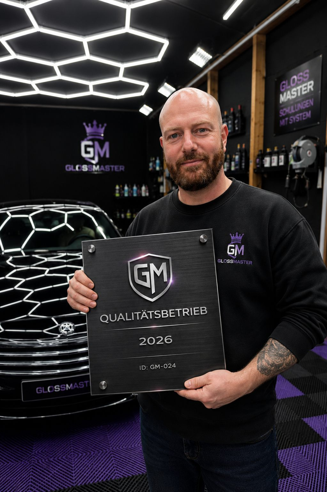

Status statt Werbung
Das Siegel spricht für sich und ersetzt laute Werbeversprechen durch nachvollziehbare Qualität.

GM Qualitätsbetrieb
Das GM-Qualitätsbetrieb-Siegel steht für den GlossMaster-Standard. Es hilft Kunden, Betriebe zu erkennen, die feste Anforderungen an Aufbereitung, Arbeitsabläufe und Kundenservice erfüllen.
Das Siegel spricht für sich und ersetzt laute Werbeversprechen durch nachvollziehbare Qualität.
Qualität ist ein fortlaufender Prozess. Jährliche Überprüfungen stellen sicher, dass Betriebe den Standard weiter erfüllen.
Mehr Sichtbarkeit im GlossMaster-Netzwerk. Passende Anfragen leiten wir direkt an aufgenommene Betriebe weiter.
Warum es das System gibt
Der Markt für Fahrzeugaufbereitung ist unübersichtlich.
Kunden mit hochwertigen Fahrzeugen suchen oft vergeblich nach echtem Fachwissen. Das GM-System trennt die Spreu vom Weizen: Nur Betriebe, die die Anforderungen an Technik, Prozesssicherheit und Kundenumgang erfüllen, dürfen das Siegel tragen.
Sofortige Glaubwürdigkeit bei Neukunden durch das Siegel.
Platzierung im GM Finder und in der Liste der Qualitätsbetriebe.
Klare Abgrenzung zum Standard-Aufbereiter um die Ecke.
Dein Betrieb wird als Premium-Dienstleister wahrgenommen.
So läuft die Aufnahme
Online-Formular mit den ersten Eckdaten zum Betrieb ausfüllen.
Referenzen, Arbeitsweise und Qualität werden nach dem GlossMaster-Kriterienkatalog bewertet.
Onboarding und das offizielle Branding-Kit.
Aufnahme als GM Qualitätsbetrieb ins GlossMaster-Qualitätsprogramm.
Bewerbung
Zeig dem Markt, was du wirklich kannst. Wir freuen uns auf deine Bewerbung.